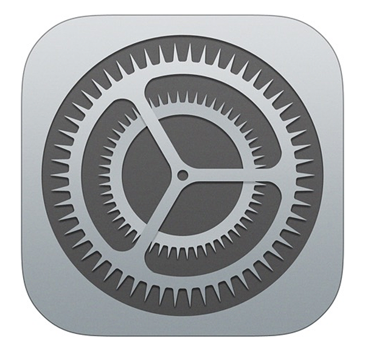

Como faço para atualizar o sistema (software) do meu IPhone?/h1>
- Na página inicial do seu IPhone, pressione o aplicativo "configurações" ou "settings".
- 
- Procure a configuração "Geral" ou "General" e clique-a.

- Clique em "Atualização de Software" ou "Software Update".

- Após isso, o seu celular entrará em uma pagina na qual, caso haja uma atualização pendente, basta clicar em "instalar atualização". Vale ressaltar que para o IPhone realizar a atualização, ele deve estar carregando e conectado a uma rede de wifi.